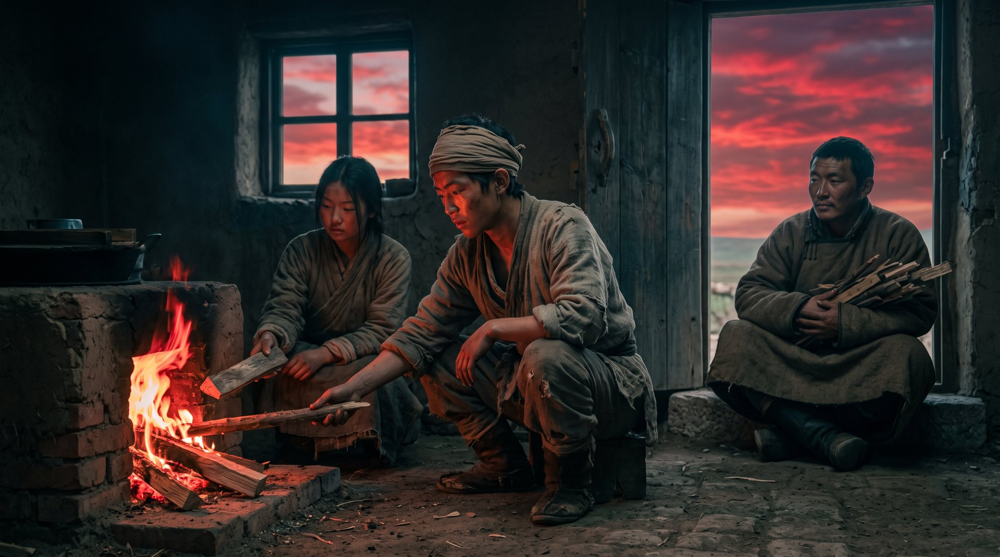

渡江之后

（第四卷《焚天》完）
百曲的第一口灶，还在。
就在村东头那间最早的老屋里。灶膛被烟火熏了几十年，砖缝里结着厚厚一层黑亮的油壳。火焱蹲在灶前，往灶膛里添了根柴。火“呼”地一下腾起来，赤红赤红地跳着，跟二十三年前一模一样。
二十三年前，他就是蹲在这口灶前，指着灶膛，对那个拎着刀的兵头子说“姓火”。
如今，兵头子早就不知道死在哪场乱战里了。刀没了，人没了，连那个朝代都没了。可这口灶还在，火还在烧。
“爹又去学堂了？”海妹掀帘进来，手上沾着算账的墨。
“嗯。”火焱说，“冯先生今天教《论语》，爹非要去听。他说这辈子没进过学堂，老了也要去坐坐。”
“他听得懂吗？”
“听不懂。可他坐在那儿，就高兴。”
海妹笑了，在灶边坐下，给火焱倒了碗水。两个人都没说话，听着灶膛里的火噼啪响。这二十多年，他们从少年到中年，从逃难到立户，从立户到起家，从起家到功成身退。该打的仗打完了，该还的账还清了，该退的也退下来了。剩下的，就是这口灶，和灶边这些过日子的声音。
“海妹，”火焱忽然说，“你还记得那年芦苇荡里，你拎着油灯来找我，问我屋里是不是着火了吗？”
“记得。”海妹说，“你练那个燎原步，一步蹿出去丈许，差点撞上墙。”
“那时候我怎么也想不到，火家能走到今天。”
“谁想得到呢。”海妹说，声音轻轻的，“那年我爹还天天念叨着要跑海，说海那边有船队收海盐，价钱比官引高一倍。”
陈老爹前年走了。走的时候很安详，就是睡过去的。火焱和赤老温把他葬在了百曲往东的滩头，面朝大海。墓碑上没刻别的，就刻了一行字：一个跑了一辈子船的人。
火焱从灶前站起来，走到院子里。义学已经放学了，孩子们三三两两地往家走，有的孩子手里还攥着刚写的字帖。经过火家老屋门口的时候，一个孩子停下来，仰着脸问他：“火爷爷，我爷爷说，你以前也是个孩子，后来烧了一口天下最旺的灶。是真的吗？”
火焱看着他，笑了：“真的。不过你爷爷说得不全。天下最旺的灶，不是火家烧的——是百曲一百二十户人家，一户一户烧起来的。”
孩子似懂非懂地跑了。
赤老温从巷口走过来，他怀里抱着的那根半焦的柴已经传给了他的儿子，儿子又传给了孙子。他如今也老了，可背还是挺的。他走到火焱面前，用已经流利了许多的汉话说：“大郎，北边来信了。阿察儿旧帐那边，扩廓王爷的后人托人捎话——草场上的火，还留着。他们说，火家的人，什么时候想回去看看，都行。”
“回信了吗？”
“回了。”赤老温说，“就一句——赤家的火，没有南北。灶在哪儿，家就在哪儿。”
火焱点了点头。天边，晚霞烧得通红，把整个百曲都镀上了一层金边。义学的书声、铁匠炉的风箱声、海路上的号子声，混在一起，飘在黄昏的空气里。
他忽然想起了直脱儿。那个蒙古老将，四朝为臣，做到江浙平章，最后被自己人逼死。他死前想通了一件事——赤氏的血脉，不该系在哪家朝廷上，该系在灶上。他花了七十年的封脉，等的不是一个能帮他复国的子孙，是一个敢在刀口下认“火”的子孙。
如今，这个子孙把火传了下去。
系统之声在他耳边响起，最后一次，不再是“老夫”的苍老，而是一种极轻极轻的、像柴火燃尽后最后一声轻响的声音：
“小子，七块碎片，你已经拿到六块。最后一块，老夫从二十三年前就告诉过你在哪里了。”
“在我心里。”
“对。你自己的火。”系统之声缓缓地说，“老夫等了七十年，等的不是你替赤氏复国，也不是你替火家发家。等的是你——有一天，能亲口把这团火，传给下一个敢在刀口下认'火'的孩子。”
火焱抬头，看着满天的晚霞。
“老祖宗，”他轻声说，“火已经传下去了。义学里的孩子，都是火家的火。”
灶膛里的火，赤红赤红地跳着。赤伯升从学堂回来了，端着一碗已经凉了的赤豆饭，蹲到灶边。海妹又添了根柴。赤老温抱着他的柴，坐在门槛上。
满天的晚霞，像一场烧遍了半个天下的大火，终于，在渡江之后，安静地落进了这一口灶里。
第四卷《焚天》，完。
· 第四卷《焚天》 ·